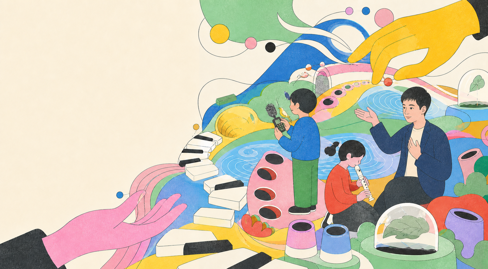
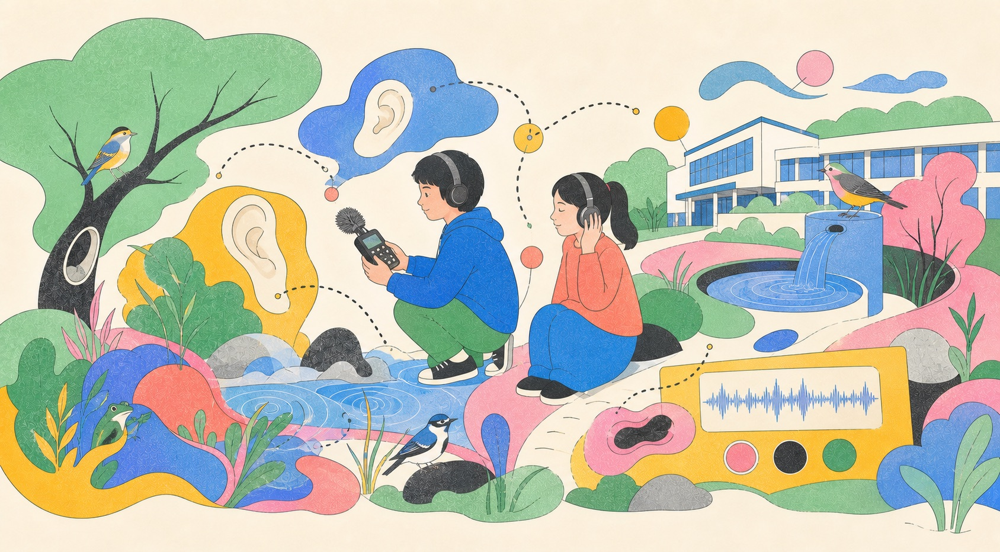
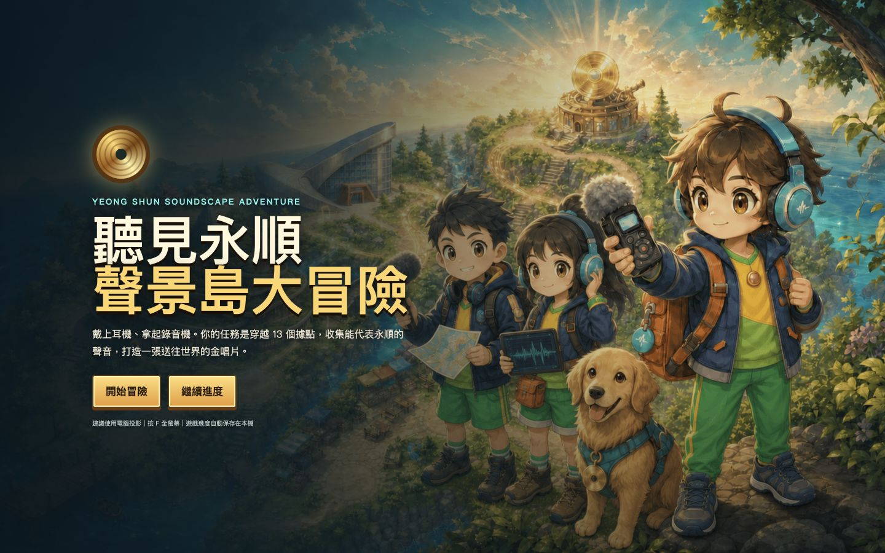
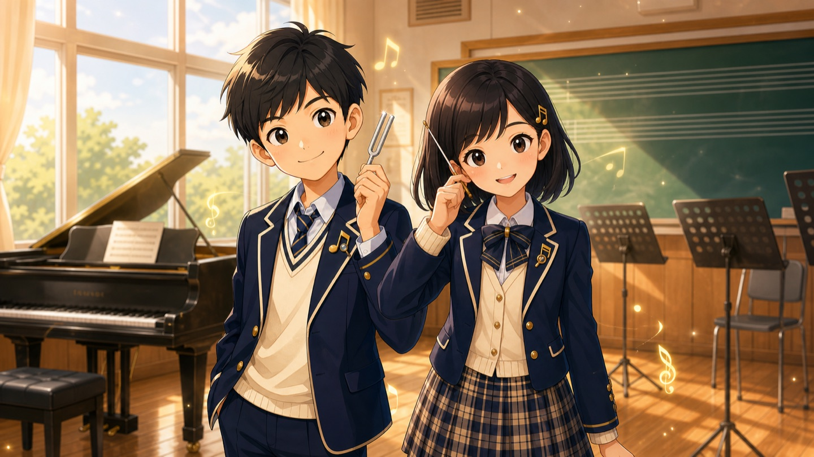

先停下來，才可能察覺。
日常之所以被忽略，往往不是沒有內容，而是沒有一個值得停留的任務。
我們如何讓孩子發現：藝術不只存在於課本、樂器與舞台，也藏在每天走過的校園、聽慣的聲音，以及還沒有被好好注意的生活裡？
這份敘事從音樂教育出發，尋找一套能讓不同學科共同帶領學生觀察、轉譯與分享生活經驗的方法。

以下文字先根據《聽見永順》的課堂脈絡整理，不假裝成已完成的正式訪談。之後應以學生與協作教師的真實引言、日期與人數取代。

學生每天都生活在藝術裡，卻常把它當成背景，沒有發現那也是可以被聆聽、描述與創作的材料。
學生熟悉校園裡的人、路線與活動，卻不一定曾停下來觀察空間如何留下聲音。
當任務要求他們錄下、比較並命名聲音時，原本「沒什麼」的地方開始出現差異與故事。
當聲音被選擇、剪輯與策展，學生不再只是回答題目，而是在重新表達自己所處的地方。
正式申請前補入：訪談對象、觀察日期、真實學生／教師引言，以及可公開的課堂紀錄。
藝術生活化並不是替日常貼上「藝術」標籤，而是設計一段讓孩子願意停下來、察覺差異，並把感受轉成作品的歷程。
日常之所以被忽略，往往不是沒有內容，而是沒有一個值得停留的任務。
比較、命名與描述，讓模糊的感覺成為可以和同伴討論的經驗。
錄音、圖像、文字與遊戲，能把個人的發現轉化成別人也能進入的入口。
三個原型分別回應「藝術如何回到生活」、「抽象學習如何變成可玩的經驗」，以及「教師如何主導內容、與 AI 協作實現」。它們不是終點，而是問題逐漸清楚的證據。

Prototype 01 / Everyday art我不是先決定做一個聲音遊戲，而是先問：學生要在什麼情境下，才會願意重新聽一次自己每天生活的地方？
校園對學生非常熟悉，也因此容易成為沒有細節的背景。藝術課程若只從作品範例開始，孩子仍可能不知道自己的生活也值得被創作。
我把聆聽包進「探索一座聲景島」的任務，讓錄音不只是操作器材，而是尋找線索、比較地點與決定什麼值得留下。
學生不是素材的接收者，而是觀察者、採集者與策展者。他們必須選擇聲音、替它命名，並說明為什麼這段聲音能代表一個地方。
這個原型把音樂的聆聽能力，連接到地方感、敘事與文化表達：藝術不是遠方的名作，而是重新注意身邊世界的方法。
待驗證：比較活動前後學生描述校園聲音的細緻度、記錄選擇聲景的理由，並訪談學生是否開始主動注意日常環境。
 Prototype 02 / Learn through play
Prototype 02 / Learn through play我想處理的不是「怎麼讓練習變可愛」，而是怎麼讓孩子真的先聽、再把聽到的節奏轉成自己的動作。
團體仿奏時，部分學生會跟著同伴動作，老師也難以在同一時間確認每個孩子是否真的聽懂拍點與節奏順序。
我把節奏型對應成鬍子出現與拔除的時機。荒謬而明確的任務提供了動作目的，也讓正確節奏直接產生看得見的結果。
孩子需要先聽示範、記住順序、預測時機，再用動作回答。失敗後可以立即重來，錯誤成為下一次嘗試的線索，而不是一次性的評分。
節奏內容、難度次序、動作規則與回饋節點，都從實際教學需要出發；遊戲外表可以幽默，核心仍是清楚的聽覺學習設計。
待驗證：記錄學生獨立仿奏的錯誤類型與重試次數，並觀察遊戲經驗能否遷移回沒有畫面的拍手或樂器活動。

Prototype 03 / Teacher-led AI collaborationAI 可以加速程式框架，但不能替教師決定學生該聽什麼、哪一個錯誤值得被放大，以及怎樣的回饋才真正有助於學習。
學生常能感覺旋律「怪怪的」，卻無法指出是哪個音、如何不同。若答案太快出現，辨識音準就只剩猜對或猜錯。
教學問題、偵探題材、練習樂句、題目內容與視覺素材，都由我依照學生的聆聽難點設計製作，確保每一個線索有明確的教學用途。
AI 協助建立程式架構與互動邏輯初稿；我負責測試、修正與重新定義規則。技術生成不能取代課程判斷，而是把教師的構想更快做成可試驗的原型。
「偵探」不是裝飾，而是一種思考方式：比對旋律、縮小範圍、提出證據。學生要從模糊的不對勁，走向能說明自己聽見了什麼。
待驗證：比較學生在使用前後定位走音的正確率、說明理由的完整度，以及隔一段時間後是否仍能辨識相似旋律線索。
目前先陳述教學觀察方向，不把參與度寫成未經記錄的成效數據。正式版本需要補上測試班級、活動前後差異與學生作品。
真正重要的轉變，是從等待老師告訴答案，走向願意聽、願意比較，也願意把自己的發現說給別人聽。
明確又有想像力的任務，讓學生願意重新觀看已經習以為常的環境。
即時回饋與重來的空間，降低犯錯的壓力，也增加重複練習的意願。
當學生的錄音、描述與選擇被同伴聽見，個人經驗開始連接成班級的共同作品。
《聽見永順》可以不只是一堂音樂課，而是一個由多個學科共同觀看同一個地方的課程框架。
邀請美術老師與學生把聲音轉成色彩、線條與視覺地圖；英文老師協助學生為聲景命名、描述並向校外聽眾介紹；音樂老師則帶領聆聽、錄音、節奏與聲音策展。最後，三個學科共同完成一份校園聲景展件。
下一步：以一個共同聲景任務、三份可調整的學科教案，以及一次聯合成果分享，測試跨域協作是否真的降低教師參與門檻。
目標不是在 90 天內完成一個大型平台，而是驗證一條可重複的路徑：讓學生從生活中找回聆聽，從聆聽中找回自己的聲音。
理解不同教師與學生如何看待「生活中的藝術」。
讓音樂、美術與英文教師共同修改一個聲景任務。
把一次課程轉成其他學校也能理解、改造與使用的工具包。
我需要的不是替單一作品增加曝光，而是與來自不同地區、學科與教育情境的實踐者共同檢驗：這套從「注意—命名—轉化—分享」出發的方法，能否離開我的教室，仍然保有彈性與意義。

Educator profile / 2026
Certified Educator Level 1
Certified Educator Level 2
Accredible credential